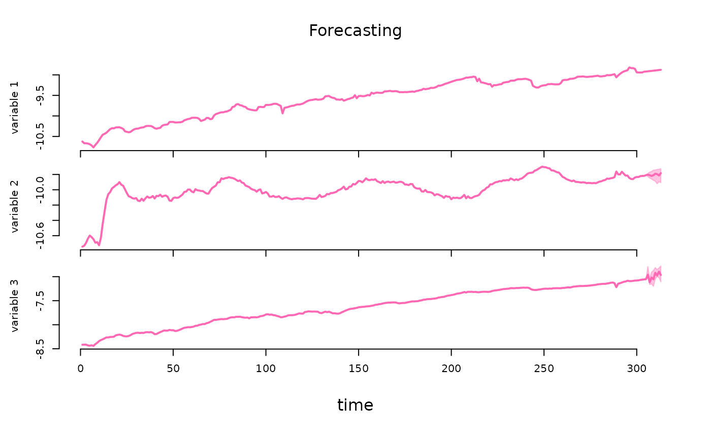

Bayesian Estimation of Structural Vector Autoregressive Models
Source:R/bsvars-package.R
bsvars-package.RdProvides fast and efficient procedures for Bayesian analysis of Structural Vector Autoregressions. This package estimates a wide range of models, including homo-, heteroskedastic and non-normal specifications. Structural models can be identified by adjustable exclusion restrictions, time-varying volatility, or non-normality, and include exclusion restrictions on autoregressive parameters. They all include a flexible three-level equation-specific local-global hierarchical prior distribution for the estimated level of shrinkage for autoregressive and structural parameters. Additionally, the package facilitates predictive and structural analyses such as impulse responses, forecast error variance and historical decompositions, forecasting, verification of heteroskedasticity and hypotheses on autoregressive parameters, and analyses of structural shocks, volatilities, and fitted values. Beautiful plots, informative summary functions, and extensive documentation including the vignette by Woźniak (2024) <doi:10.48550/arXiv.2410.15090> complement all this. The implemented techniques align closely with those presented in Lütkepohl, Shang, Uzeda, & Woźniak (2024) <doi:10.48550/arXiv.2404.11057>, Lütkepohl & Woźniak (2020) <doi:10.1016/j.jedc.2020.103862>, Song & Woźniak (2021) <doi:10.1093/acrefore/9780190625979.013.174>, and Woźniak & Droumaguet (2015) <doi:10.13140/RG.2.2.19492.55687>. The 'bsvars' package is aligned regarding objects, workflows, and code structure with the R package 'bsvarSIGNs' by Wang & Woźniak (2024) <doi:10.32614/CRAN.package.bsvarSIGNs>, and they constitute an integrated toolset.
Details
Models. All the SVAR models in this package are specified by two equations, including
the reduced form equation:
$$Y = AX + E$$
where \(Y\) is an NxT matrix of dependent variables,
\(X\) is a KxT matrix of explanatory variables,
\(E\) is an NxT matrix of reduced form error terms,
and \(A\) is an NxK matrix of autoregressive slope coefficients and
parameters on deterministic terms in \(X\).
The structural equation is given by:
$$BE = U$$
where \(U\) is an NxT matrix of structural form error terms, and
\(B\) is an NxN matrix of contemporaneous relationships.
Finally, all of the models share the following assumptions regarding the structural
shocks U, namely, joint conditional normality given the past observations collected
in matrix X, and temporal and contemporaneous independence. The latter implies
zero correlations and autocorrelations.
The various SVAR models estimated differ by the specification of structural shocks variances. The different models include:
homoskedastic model with unit variances
heteroskedastic model with stationary Markov switching in the variances
heteroskedastic model with non-centred Stochastic Volatility process for variances
heteroskedastic model with centred Stochastic Volatility process for variances
a model with Student-t distributed structural shocks with estimated equation-specific degrees-of-freedom parameter
non-normal model with a finite mixture of normal components and component-specific variances
heteroskedastic model with sparse Markov switching in the variances where the number of heteroskedastic components is estimated
non-normal model with a sparse mixture of normal components and component-specific variances where the number of heteroskedastic components is estimated
Prior distributions. All the models feature a Minnesota prior for autoregressive parameters in matrix \(A\) and a generalised-normal distribution for the structural matrix \(B\). Both of these distributions feature a 3-level equation-specific local-global hierarchical prior that make the shrinkage estimation flexible improving the model fit and its forecasting performance.
Estimation algorithm. The models are estimated using frontier numerical methods making the Gibbs sampler fast and efficient. The sampler of the structural matrix follows Waggoner & Zha (2003), whereas that for autoregressive parameters follows Chan, Koop, Yu (2022). The specification of Markov switching heteroskedasticity is inspired by Song & Woźniak (2021), and that of Stochastic Volatility model by Kastner & Frühwirth-Schnatter (2014). The estimation algorithms for particular models are scrutinised in Lütkepohl, Shang, Uzeda, & Woźniak (2024) and Woźniak & Droumaguet (2024) and some other inferential and identification problems are considered in Lütkepohl & Woźniak (2020).
Note
This package is currently in active development. Your comments, suggestions and requests are warmly welcome!
References
Chan, J.C.C., Koop, G, and Yu, X. (2024) Large Order-Invariant Bayesian VARs with Stochastic Volatility. Journal of Business & Economic Statistics, 42, doi:10.1080/07350015.2023.2252039 .
Kastner, G. and Frühwirth-Schnatter, S. (2014) Ancillarity-Sufficiency Interweaving Strategy (ASIS) for Boosting MCMC Estimation of Stochastic Volatility Models. Computational Statistics & Data Analysis, 76, 408–423, doi:10.1016/j.csda.2013.01.002 .
Lütkepohl, H., Shang, F., Uzeda, L., and Woźniak, T. (2024) Partial Identification of Heteroskedastic Structural VARs: Theory and Bayesian Inference. University of Melbourne Working Paper, 1–57, doi:10.48550/arXiv.2404.11057 .
Lütkepohl, H., and Woźniak, T., (2020) Bayesian Inference for Structural Vector Autoregressions Identified by Markov-Switching Heteroskedasticity. Journal of Economic Dynamics and Control 113, 103862, doi:10.1016/j.jedc.2020.103862 .
Song, Y., and Woźniak, T. (2021) Markov Switching Heteroskedasticity in Time Series Analysis. In: Oxford Research Encyclopedia of Economics and Finance. Oxford University Press, doi:10.1093/acrefore/9780190625979.013.174 .
Waggoner, D.F., and Zha, T., (2003) A Gibbs sampler for structural vector autoregressions. Journal of Economic Dynamics and Control, 28, 349–366, doi:10.1016/S0165-1889(02)00168-9 .
Woźniak, T., and Droumaguet, M., (2024) Bayesian Assessment of Identifying Restrictions for Heteroskedastic Structural VARs.
Author
Tomasz Woźniak wozniak.tom@pm.me
Examples
# upload data
data(us_fiscal_lsuw) # upload dependent variables
data(us_fiscal_ex) # upload exogenous variables
# specify the model and set seed
set.seed(123)
specification = specify_bsvar_sv$new(us_fiscal_lsuw, p = 1, exogenous = us_fiscal_ex)
#> The identification is set to the default option of lower-triangular structural matrix.
# run the burn-in
burn_in = estimate(specification, 5)
#> **************************************************|
#> bsvars: Bayesian Structural Vector Autoregressions|
#> **************************************************|
#> Gibbs sampler for the SVAR-SV model |
#> Non-centred SV model is estimated |
#> **************************************************|
#> Progress of the MCMC simulation for 5 draws
#> Every draw is saved via MCMC thinning
#> Press Esc to interrupt the computations
#> **************************************************|
# estimate the model
posterior = estimate(burn_in, 10)
#> **************************************************|
#> bsvars: Bayesian Structural Vector Autoregressions|
#> **************************************************|
#> Gibbs sampler for the SVAR-SV model |
#> Non-centred SV model is estimated |
#> **************************************************|
#> Progress of the MCMC simulation for 10 draws
#> Every draw is saved via MCMC thinning
#> Press Esc to interrupt the computations
#> **************************************************|
# compute impulse responses 2 years ahead
irf = compute_impulse_responses(posterior, horizon = 8)
# compute forecast error variance decomposition 2 years ahead
fevd = compute_variance_decompositions(posterior, horizon = 8)
# workflow with the pipe |>
############################################################
set.seed(123)
us_fiscal_lsuw |>
specify_bsvar_sv$new(p = 1, exogenous = us_fiscal_ex) |>
estimate(S = 5) |>
estimate(S = 10) |>
compute_variance_decompositions(horizon = 8) -> fevds
#> The identification is set to the default option of lower-triangular structural matrix.
#> **************************************************|
#> bsvars: Bayesian Structural Vector Autoregressions|
#> **************************************************|
#> Gibbs sampler for the SVAR-SV model |
#> Non-centred SV model is estimated |
#> **************************************************|
#> Progress of the MCMC simulation for 5 draws
#> Every draw is saved via MCMC thinning
#> Press Esc to interrupt the computations
#> **************************************************|
#> **************************************************|
#> bsvars: Bayesian Structural Vector Autoregressions|
#> **************************************************|
#> Gibbs sampler for the SVAR-SV model |
#> Non-centred SV model is estimated |
#> **************************************************|
#> Progress of the MCMC simulation for 10 draws
#> Every draw is saved via MCMC thinning
#> Press Esc to interrupt the computations
#> **************************************************|
# conditional forecasting using a model with exogenous variables
############################################################
data(us_fiscal_ex_forecasts) # upload exogenous variables future values
data(us_fiscal_cond_forecasts) # upload a matrix with projected ttr
set.seed(123)
us_fiscal_lsuw |>
specify_bsvar_sv$new(p = 1, exogenous = us_fiscal_ex) |>
estimate(S = 5) |>
estimate(S = 10) -> posterior
#> The identification is set to the default option of lower-triangular structural matrix.
#> **************************************************|
#> bsvars: Bayesian Structural Vector Autoregressions|
#> **************************************************|
#> Gibbs sampler for the SVAR-SV model |
#> Non-centred SV model is estimated |
#> **************************************************|
#> Progress of the MCMC simulation for 5 draws
#> Every draw is saved via MCMC thinning
#> Press Esc to interrupt the computations
#> **************************************************|
#> **************************************************|
#> bsvars: Bayesian Structural Vector Autoregressions|
#> **************************************************|
#> Gibbs sampler for the SVAR-SV model |
#> Non-centred SV model is estimated |
#> **************************************************|
#> Progress of the MCMC simulation for 10 draws
#> Every draw is saved via MCMC thinning
#> Press Esc to interrupt the computations
#> **************************************************|
posterior |> forecast(
horizon = 8,
exogenous_forecast = us_fiscal_ex_forecasts,
conditional_forecast = us_fiscal_cond_forecasts
) -> predictive
predictive |> summary()
#> **************************************************|
#> bsvars: Bayesian Structural Vector Autoregressions|
#> **************************************************|
#> Posterior summary of forecasts |
#> **************************************************|
#> $variable1
#> mean sd 5% quantile 95% quantile
#> 1 -8.914237 0 -8.914237 -8.914237
#> 2 -8.908921 0 -8.908921 -8.908921
#> 3 -8.903604 0 -8.903604 -8.903604
#> 4 -8.898288 0 -8.898288 -8.898288
#> 5 -8.892971 0 -8.892971 -8.892971
#> 6 -8.887655 0 -8.887655 -8.887655
#> 7 -8.882338 0 -8.882338 -8.882338
#> 8 -8.877022 0 -8.877022 -8.877022
#>
#> $variable2
#> mean sd 5% quantile 95% quantile
#> 1 -9.805495 0.02956740 -9.844849 -9.767157
#> 2 -9.790882 0.05067936 -9.850043 -9.715384
#> 3 -9.796028 0.05913802 -9.860006 -9.698859
#> 4 -9.795986 0.04149156 -9.852577 -9.738143
#> 5 -9.788067 0.03456590 -9.830534 -9.737624
#> 6 -9.778807 0.03531013 -9.827392 -9.735453
#> 7 -9.780025 0.04228994 -9.833156 -9.714634
#> 8 -9.777503 0.05813192 -9.839114 -9.689263
#>
#> $variable3
#> mean sd 5% quantile 95% quantile
#> 1 -7.043517 0.02320960 -7.062357 -7.003826
#> 2 -7.036814 0.02739785 -7.060654 -6.986096
#> 3 -7.033656 0.03095459 -7.074208 -6.986777
#> 4 -7.027657 0.02926314 -7.068967 -6.986294
#> 5 -7.029611 0.02541738 -7.067029 -6.996343
#> 6 -7.023232 0.03102872 -7.067392 -6.985516
#> 7 -7.016175 0.03393596 -7.068571 -6.980449
#> 8 -7.009024 0.03153115 -7.058622 -6.975533
#>
predictive |> plot(probability = 0.68)

# estimation of a model with exogeneity restrictions on the autoregressive matrix
############################################################
set.seed(123)
A = matrix(TRUE, 3, 7)
A[1,3] = A[1,6] = FALSE
us_fiscal_lsuw |>
specify_bsvar_sv$new(p = 2, A = A) |>
estimate(S = 5) |>
estimate(S = 10) -> posterior
#> The identification is set to the default option of lower-triangular structural matrix.
#> **************************************************|
#> bsvars: Bayesian Structural Vector Autoregressions|
#> **************************************************|
#> Gibbs sampler for the SVAR-SV model |
#> Non-centred SV model is estimated |
#> **************************************************|
#> Progress of the MCMC simulation for 5 draws
#> Every draw is saved via MCMC thinning
#> Press Esc to interrupt the computations
#> **************************************************|
#> **************************************************|
#> bsvars: Bayesian Structural Vector Autoregressions|
#> **************************************************|
#> Gibbs sampler for the SVAR-SV model |
#> Non-centred SV model is estimated |
#> **************************************************|
#> Progress of the MCMC simulation for 10 draws
#> Every draw is saved via MCMC thinning
#> Press Esc to interrupt the computations
#> **************************************************|
posterior |> summary()
#> **************************************************|
#> bsvars: Bayesian Structural Vector Autoregressions|
#> **************************************************|
#> Posterior summary of the parameters |
#> **************************************************|
#> $B
#> $B$equation1
#> mean sd 5% quantile 95% quantile
#> B[1,1] 0.1438155 0.008803057 0.1318579 0.1567182
#>
#> $B$equation2
#> mean sd 5% quantile 95% quantile
#> B[2,1] -12.96861 0.6636411 -13.72499 -11.98463
#> B[2,2] 41.67352 2.1367503 38.53311 44.10881
#>
#> $B$equation3
#> mean sd 5% quantile 95% quantile
#> B[3,1] -38.02592 3.023544 -43.20553 -34.696859
#> B[3,2] -10.57976 2.023064 -13.46414 -8.084707
#> B[3,3] 62.55507 4.378807 58.45350 70.491154
#>
#>
#> $A
#> $A$equation1
#> mean sd 5% quantile 95% quantile
#> lag1_var1 0.1267426 0.10867062 -0.014539594 0.277211718
#> lag1_var1 -0.1794828 0.12089080 -0.345126014 -0.005063765
#> lag1_var2 0.0000000 0.00000000 0.000000000 0.000000000
#> lag2_var2 0.1883030 0.11335111 0.031265500 0.335941372
#> lag2_var3 0.1699747 0.11684437 -0.004605706 0.323861141
#> lag2_var3 0.0000000 0.00000000 0.000000000 0.000000000
#> const 0.1570017 0.06900142 0.067533904 0.263981593
#>
#> $A$equation2
#> mean sd 5% quantile 95% quantile
#> lag1_var1 -0.19474487 0.04728820 -0.27003788 -0.14410319
#> lag1_var1 1.28981563 0.04709049 1.24171481 1.36468984
#> lag1_var2 0.03414750 0.07843177 -0.06415609 0.14578863
#> lag2_var2 -0.01514490 0.04234569 -0.06409834 0.05154471
#> lag2_var3 -0.33075027 0.04457598 -0.40130565 -0.28592323
#> lag2_var3 -0.02933162 0.08251213 -0.14072119 0.07756065
#> const -0.26332859 0.07744551 -0.38087146 -0.18700359
#>
#> $A$equation3
#> mean sd 5% quantile 95% quantile
#> lag1_var1 -0.51805774 0.05773449 -0.598813617 -0.44324449
#> lag1_var1 -0.12193280 0.06426710 -0.227982312 -0.05425328
#> lag1_var2 0.74758286 0.13270625 0.594797622 0.91405266
#> lag2_var2 0.09255852 0.05936199 0.013627023 0.17468813
#> lag2_var3 0.11431057 0.05739371 0.045132009 0.20527641
#> lag2_var3 0.21813262 0.13043274 0.053636347 0.37503015
#> const 0.08747133 0.06211487 0.002422087 0.18182101
#>
#>
#> $hyper
#> $hyper$B
#> mean sd 5% quantile 95% quantile
#> B[1,]_shrinkage 33.87449 16.15639 16.87574 58.30470
#> B[2,]_shrinkage 215.96165 122.02569 117.30917 433.57276
#> B[3,]_shrinkage 500.09368 153.37556 281.44722 735.11555
#> B[1,]_shrinkage_scale 371.26654 176.88684 178.54211 634.93528
#> B[2,]_shrinkage_scale 557.59603 419.21920 183.11801 1310.66666
#> B[3,]_shrinkage_scale 601.32464 498.05198 186.58650 1509.53852
#> B_global_scale 41.94323 29.12964 15.06840 93.06355
#>
#> $hyper$A
#> mean sd 5% quantile 95% quantile
#> A[1,]_shrinkage 0.5951947 0.4124002 0.29333259 1.3578467
#> A[2,]_shrinkage 0.4280360 0.1976084 0.19457623 0.6983967
#> A[3,]_shrinkage 0.3362766 0.2520657 0.06733226 0.7424988
#> A[1,]_shrinkage_scale 6.2138513 3.2506694 3.67782061 11.9923138
#> A[2,]_shrinkage_scale 5.7783254 2.4255877 2.54866954 9.1666129
#> A[3,]_shrinkage_scale 4.4897839 2.5216319 1.44920698 8.1600734
#> A_global_scale 0.7193792 0.1118966 0.55965839 0.8875761
#>
#>